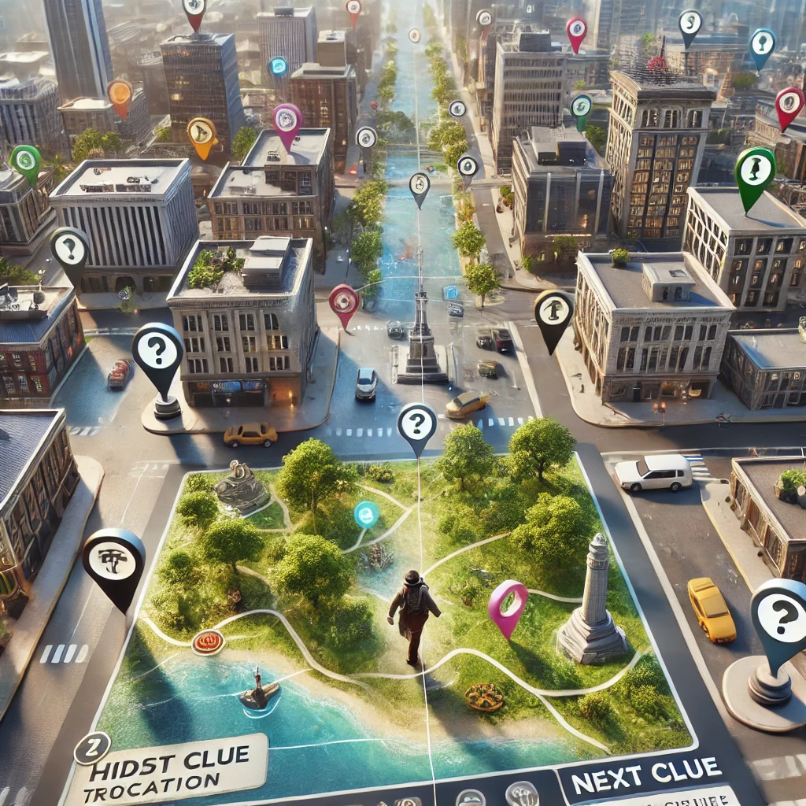
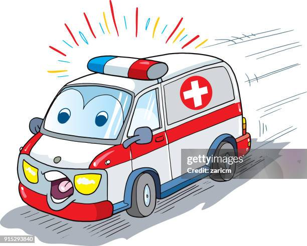

Welcome to Play Rush, where 3D maps meet
interactive adventures! This unique experience lets you explore
real-world locations on a photorealistic 3D map, uncovering mysteries
and solving puzzles in a series of mini-games. Each challenge provides
clues, markers, and hints right on the map, making each quest engaging
and easy to follow.
In Play Rush, you’ll step into a range
of fun scenarios—from locating hidden treasures and solving puzzles
based on historical landmarks, to following clues that lead to famous
brands or interesting sites. With every game, you’ll explore different
cityscapes, navigate visually rich environments, and complete missions
that bring each map to life.
Play Rush uses Google’s 3D Maps to
create an immersive yet easy-to-navigate experience, so players of all
ages can enjoy the thrill of discovery from wherever they are. Ready
to start exploring? Choose a quest, follow the clues, and see where
the map leads you!
Explore the Rush

Batman Vs Syndicate
Step into the shoes of Batman in this thrilling adventure where the
stakes are high. The nefarious Syndicate has kidnapped key
ministers, and it's up to you to track them down and save the day.
The Elder Wand
Embark on an exciting journey to uncover the hidden location of the
Elder Wand. In this game, you'll move from one destination to the
next, solving riddles and answering questions to reveal your next
clue.
Dora the Explora
Embark on an exciting journey with Dora as she sets out to solve
riddles and uncover hidden secrets across breathtaking locations.
Players will team up with Dora to tackle challenges, answer fun
questions, and navigate through an adventurous map filled with clues
leading to the next destination. Each solved riddle reveals a new
place, bringing you closer to the ultimate treasure! With each stop,
learn intriguing facts about the world while having an unforgettable
adventure. Will you help Dora solve all the mysteries and claim the
treasure? Let’s explore!
The Dream
Embark on an exciting journey with Dora as she sets out to solve
riddles and uncover hidden secrets across breathtaking locations.
Players will team up with Dora to tackle challenges, answer fun
questions, and navigate through an adventurous map filled with clues
leading to the next destination. Each solved riddle reveals a new
place, bringing you closer to the ultimate treasure! With each stop,
learn intriguing facts about the world while having an unforgettable
adventure. Will you help Dora solve all the mysteries and claim the
treasure? Let’s explore!
Spiderman
In Spider-Man: Web of Mysteries, players join the friendly
neighborhood superhero on a thrilling quest through the city. A
cryptic message from an unknown villain leads Spider-Man on a trail
of puzzles, riddles, and hidden clues scattered across iconic urban
locations. As Spider-Man swings through the city, solving
challenges, he unravels a sinister plot that threatens its very
core. With each solved clue, you’ll get closer to uncovering the
villain's identity and saving the day. Are you ready to don the
mask, solve the mysteries, and prove that with great power comes
great responsibility?

Ambulance
In Ambulance: Race to Save Lives, you are the city’s unsung hero,
the ambulance driver who holds the power to turn seconds into lives
saved. A devastating disaster has struck the city, leaving victims
stranded in unpredictable locations. Your mission: solve critical
riddles, follow complex routes, and overcome obstacles to reach the
patients in time. Each clue points you to the next emergency site,
testing your wits and decision-making under pressure. The clock is
ticking, and lives depend on you. Are you ready to answer the call
and navigate the city in this high-stakes game of life and death?
Anti Terror Squad
In Anti-Terror Squad: Mission Critical, you are a highly trained
member of an elite counter-terrorism unit tasked with stopping a
dangerous terrorist group planning a series of devastating attacks.
Time is of the essence, and you must navigate through a web of
clues, riddles, and high-pressure scenarios to prevent disaster. As
part of the squad, you’ll be sent to different locations, where
you’ll need to solve cryptic puzzles and gather intelligence to
uncover the terrorists’ plans. Each successful answer brings you one
step closer to defusing the threat, but be careful — the terrorists
are always one step ahead, and you must think fast to outsmart them.
Are you prepared to take on this dangerous mission and save
countless lives? The fate of the city is in your hands.
Cops Vs Robbers
In Cops Vs Robbers: The Great Chase, you find yourself in the midst
of a high-stakes cat-and-mouse game between law enforcement and a
group of notorious robbers who have just pulled off a daring heist.
The streets are alive with chaos as you, either as a member of the
elite police task force or one of the cunning robbers, race against
time to outwit, outsmart, and outpace your opponent. If you're on
the side of the law, it's your job to track down the robbers,
decipher clues, and catch them before they escape with the loot. But
if you're one of the robbers, you'll need to stay ahead of the cops,
find clever hiding spots, and dodge traps while working with your
team to divide the treasure and make a successful getaway. Through a
series of riddles, clues, and challenges, you'll have to think
quickly and strategically. Who will win this epic battle of wits?
Will the cops catch the robbers in time, or will the robbers
outsmart the law and make their escape? It's a race against time,
and every decision counts.